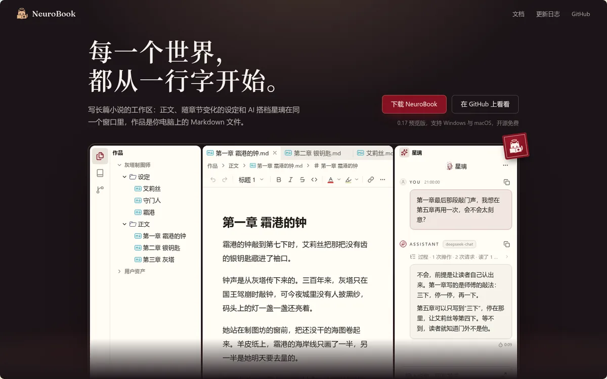
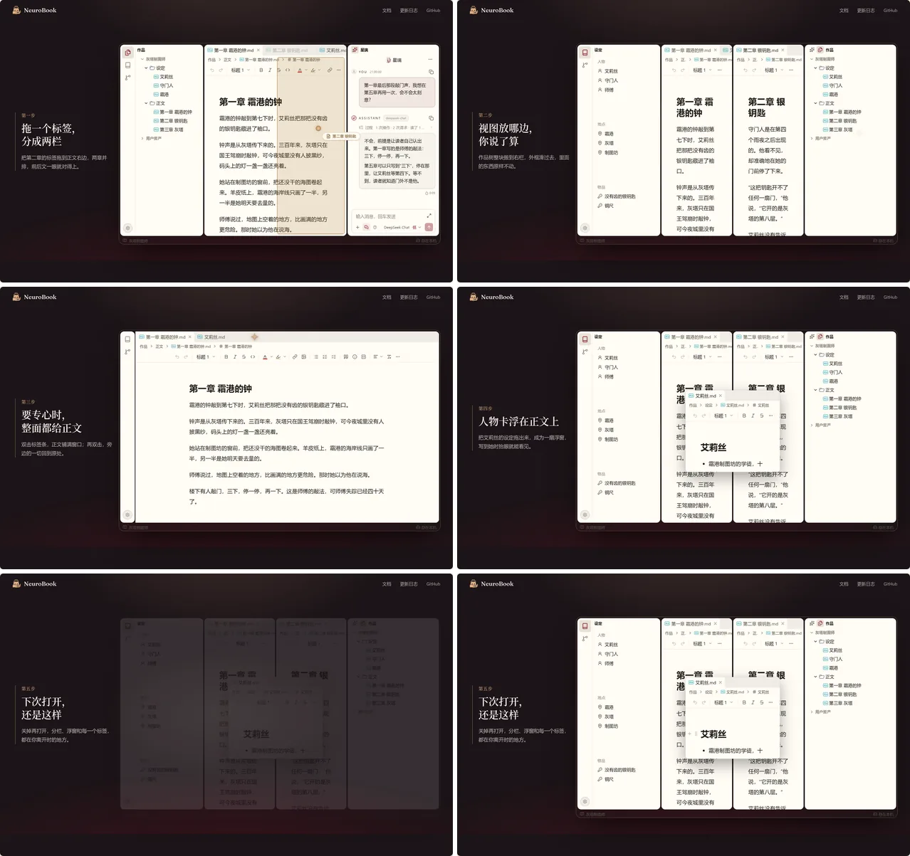

产品介绍首页：开场与第一幕原型（第 3 轮）
首屏开场留哪一种？
推荐 B 金线勾出：两秒左右，先描出这台工作台的格局再铺色，线条就是下面真工作台的边，不用换一次材质。
首屏第一句用哪一句？
推荐“写一部长篇，先摆好一张书桌。”：带着“长篇”，又正好落在下面那台工作台上；它是什么，由下一行说清楚。

每一个世界，都从一行字开始。
写一部长篇，先摆好一张书桌。
从一行草稿，到一部成书。
写下第一句，世界便有了形状。
你的世界，一章一章长出来。
世界很大，从第一行写起。
第一幕这样演，其余四幕照着做吗？
推荐照着做：五步都是工作台自己的动作与布局动画，笔尖只负责指给人看；访客一动手它就让开。

已定
- 首页给搜索进来的人，做得像产品介绍；书庭这类页面另做、自由发挥（2026-11-26）
- 截图尽量少：直接把工作台复原，让人体验到拖动、分屏与布局动画的丝滑（第 1 轮）
- 第一屏把介绍说明白，同时要有高级精美的动画，让人想往下滚；往下滚进入滚动动画（第 1 轮）
- 照第 2 轮的分节脚本做原型；三种首屏动画都做出来比较（第 2 轮）
- 基调取 w00050 t06 契约仪式页的史诗、神圣、西幻气氛，不复制；现有的 NovelAI 场景图不直接用（2026-11-26）
- 要讲的功能：写作与编辑器、世界引擎、剧情（在做）、星璃与 Agent、本地与开源、插件与 SDK、桌面版、模型自选；llmlint 不列（2026-11-26）